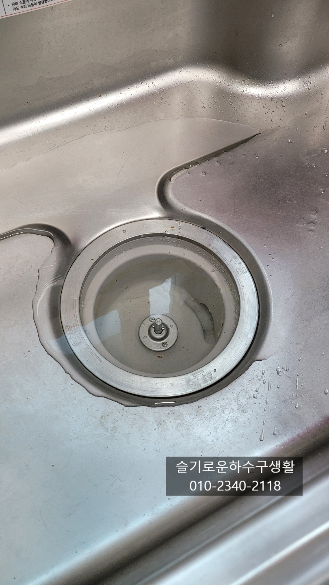
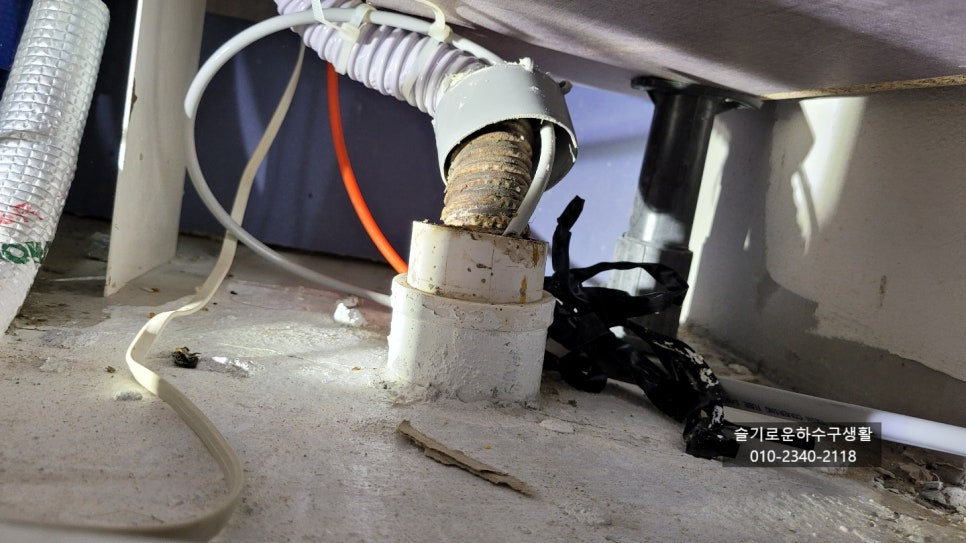
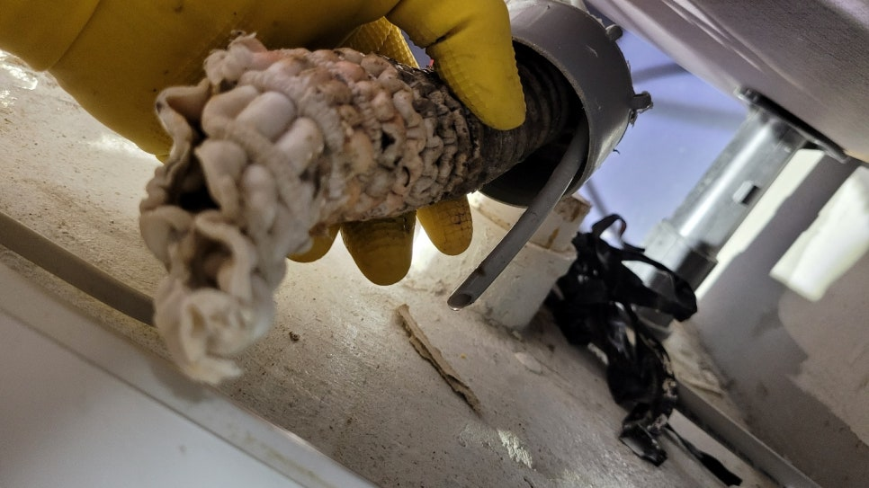
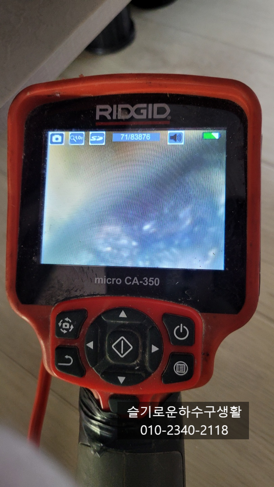
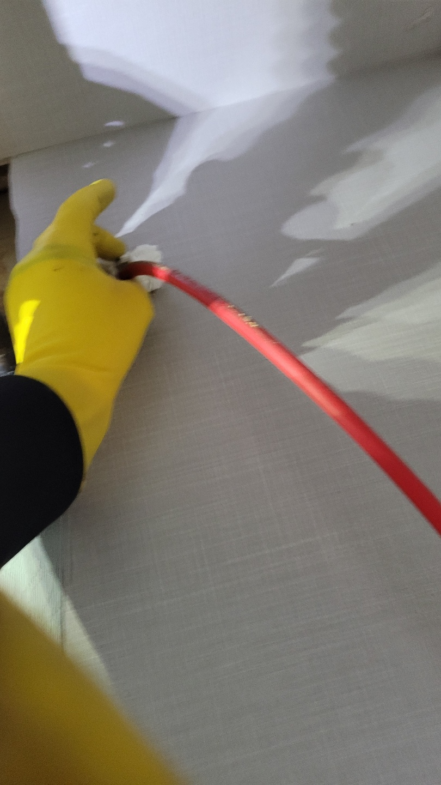
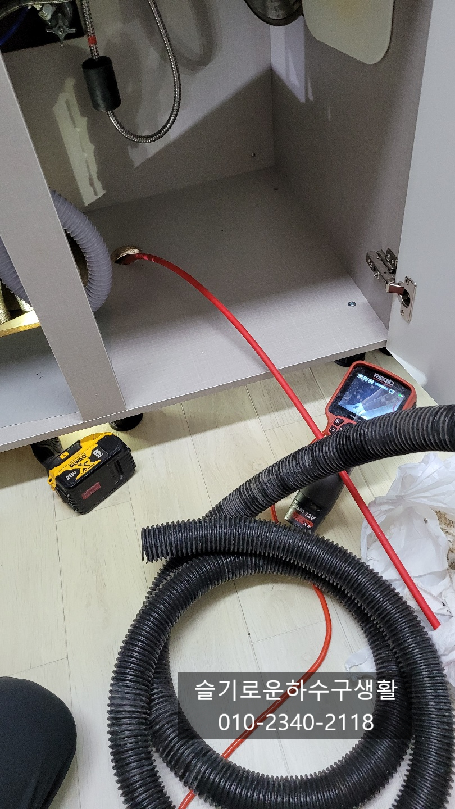
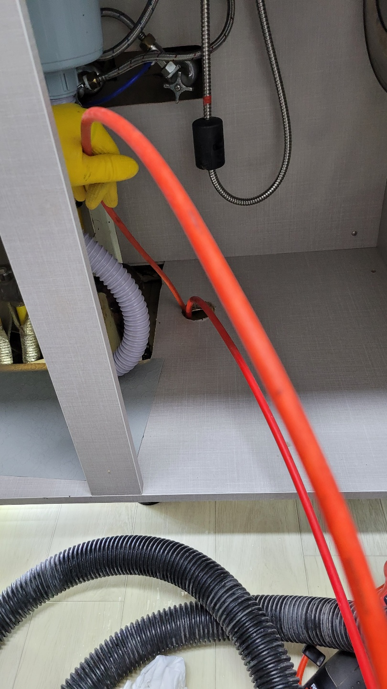

🏠 기흥구싱크대막힘 보라동 마북동 보정동 싱크대뚫는곳
서울 보정동 싱크대막힘 전문 시공 후기

📋 작업 개요
- 위치: 서울 보정동, 보정동, 서울
- 서비스 유형: 싱크대막힘, 하수구막힘, 배관막힘, 누수수리, 역류해결, 뚫는업체, 배관청소
- 작업 일시: 2021. 10. 22. 1:03
- 업체명: 하수구수사대 (010-5615-2118)
🔍 문제 상황
기흥구싱크대막힘 보라동 마북동 보정동 싱크대뚫는곳
안녕하세요
슬기로운하수구생활 입니다
오늘은 #기흥구싱크대막힘현장 다녀왔습니다.
고객님께서 싱크대하수구막힘으로 일년에 한번씩은
뚫고 최근에는 3개월전에 뚫었는데 또 막히셔서 소개받고
저희를 불러주셨어요.
싱크대물을 틀어보니 물이 천천히 내려가는증상이고
배관에서도 물이 조금씩 새어나오고 있어요. 이렇게
오랜기간 방치하게되면 밑에집 천장에 누수가 생기고
마루바닥이면 점점 썩어 변색이 될수 있기에
원인파악과 처리가 필요합니다.
배수호스 끝부분도 상태가 엉망인게 뜨거운 물을
자주 부었을 것으로 추측되어집니다.

🔎 원인 분석
💡 전문가 진단: 슬기로운하수구생활010-2340-2118
일단 물이 잘내려가지도 않지만 악취도 심해서
원인을 파악해보기위해 내시경카메라로 검사를 진행해봅니다.
내시경카메라로 배관상태를 체크해보니
기름덩어리가 배관위쪽에 가득차 있어요.
이렇게되면 물을 한번에 내렸을때 역류하고
천천히 내려갈수 밖에 없고 일부덩어리가 무너지만
막히는 증상이 나타나게 됩니다.
이정도 상태인데 매번 막힐때마다 스프링으로
뚫기만 하니 자주 막힐수 밖에 없습니다.
내시경카메라를 보면서 장비로 배관에 붙어있는 기름덩어리를
제거하는 작업을 진행합니다. 내시경으로 보면서
작업이 진행되기 때문에 이보다 확실한 방법은
없다고 보시면 되세요^^
슬기로운하수구생활

🔧 작업 과정
010-2340-2118
아파트의 경우 같은동 같은라인이 배관구조가 똑같은데
사용을 어떻게 하느냐에 따라 막히는 주기도 틀려서
관리를 잘해주셔야해요.
처음부터 배관관리를 위해 펑크린같은 세정제를
주기적으로 넣어서 관리하는 집과 크게 신경안쓰고
쓰시는 집들도 있는데 배관구배가 잘 되어있으면
이상은 없겠지만 배관에 물이 고여있을 정도로
구배가 좋지않으면 기름이 점점 쌓여 결국에는
막히게 됩니다. 요즘 짓는 아파트는 배관을 길게
빼고 굴곡이 많아 막힘증상이 빠르더라구요.
주기적인 관리가 꼭 필요합니다.
#기흥구싱크대막힘 현장도 구배가 좋지않은데요
물이 고이면 기름이 그곳에 머무르면서 배관에 조금씩 붙게되면
딱딱하게 덩어리가 되면 결국 막히게 됩니다.
기름덩어리는 모두 제거하고 세대내에서 최종적으로 나가는 배관
까지 깨끗히 청소를 완료하였습니다.
싱크대호스도 오래되고 안에 음식물이 끼어있어 악취의
원인에 될수 있어요. 호스도 소모품이라 상태를 보고 교체를
해주는것이 좋아요^^
싱크대호스까지 깨끗하게 교체해드리니 작업한 저도
뿌듯합니다^^


✅ 작업 완료
물을 받아서 내려보는 테스트를
해주었는데 시원하게 잘 내려갑니다.
막힘과 악취를 한번에 잡은 현장입니다^^
저희 슬기로운하수구생활 팀은
서울,경기,인천 전지역에서 활동중이며
하수구가 막혔다면 언제든지 연락주세요.




⚠️ 베란다 누수 및 방수 관리 방법
- ✅ 비가 많이 올 때 창틀 주변이나 아래층 천장에 얼룩이 생기는지 정기적으로 확인해 보세요.
- ✅ 우수관 주변 실리콘 마감이 들뜨거나 깨진 틈새가 있는지 손상 여부를 수시로 체크하세요.
- ✅ 베란다 바닥 타일의 줄눈(메지)이 소실되면 그 틈으로 물이 침투하여 누수가 유발됩니다.
- ✅ 누수 의심 증상 발견 시 방치하면 아래층 손실이 커지므로 즉시 전문가의 진단을 받으십시오.
💡 핵심 정리
- 확실한 장비 작업(내시경 점검 및 샤프트 스케일링)으로 원인을 뿌리 뽑습니다.
- 작업 후 1년 이내에 동일한 부위 재발 시 100% 무상 A/S 서비스를 보장합니다.
- 서울 · 경기 · 인천 전 지역에 24시간 언제든 긴급 출동할 수 있도록 항시 대기 중입니다.
❓ 자주 묻는 질문 (FAQ)
🚨 서울 보정동 싱크대막힘 문제로 고민이신가요?
정확한 원인 진단과 확실한 시공으로 재발 없는 해결을 약속드립니다.
24시간 긴급 출동 | 서울 · 경기 · 인천 전지역 | 1년 내 재발 시 무상 A/S